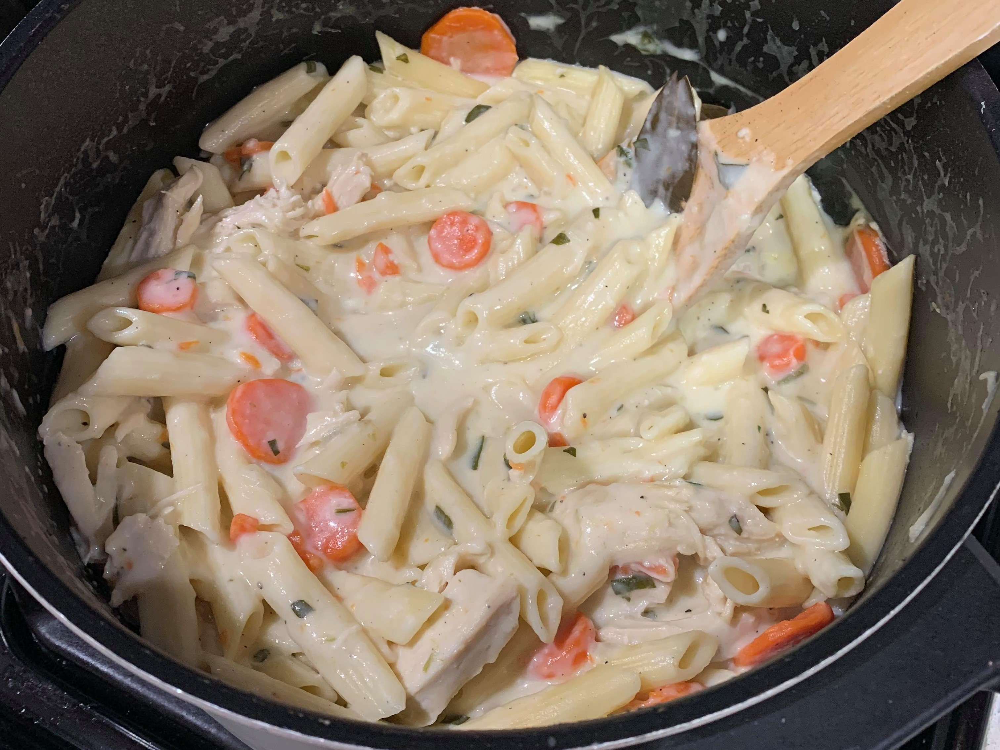

Creamy Chicken Soup

Ingredients:
- 2 cups Pasta
- 1 lb Boneless skinless chicken breasts
- 1 1/2 tbsp Olive oil
- 1 Medium onion
- 3 Carrots
- 3 Celery stalks
- 3 Cloves garlic
- 32 oz Low-sodium chicken broth
- 3 tbsp Parsley
- 2 Bay leaves
- Salt and black pepper, to taste
- 1/4 cup Butter
- 1/4 cup + 2 tbsp Flour
- 2 1/2 cups Milk
- 1/3 cup Heavy cream
Instructions:
- Prepare the pasta.
- In a large pot, heat the olive oil over medium heat. Add onion, carrot and celery and saute until soft, about 3-4 minutes, then add garlic and saute 1 minute longer.
- Add chicken broth, parsley, bay leaves and season with salt and pepper to taste.
- Add chicken breasts and bring the soup to a boil. Reduce heat to medium, cover with lid, and allow the soup to simmer until the chicken has cooked through, about 10-15 minutes depending on the thickness of the breast.
- Remove the chicken and allow to rest for 5 minutes, then shred into small bite size pieces.
- In a separate pan over medium heat, melt the butter and add flour and cook, stirring constantly, for 1 1/2 minutes.
- While constantly whisking, slowly add in milk and whisk until there are no lumps.
- Whisk in the heavy cream and bring mixture to a boil while stirring constantly. Pour the milk mixture into soup mixture and return chicken to soup along with the cooked pasta and stir.